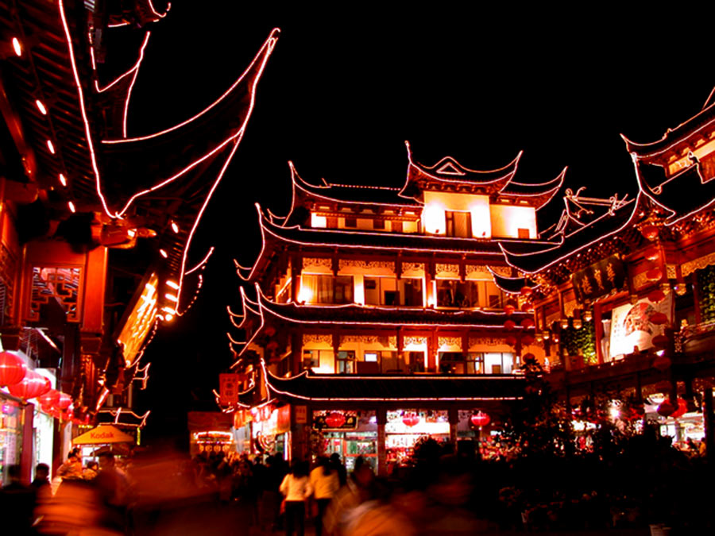

Shanghai is one of the four municipalities of the people’s republic of China. With a population of 24.28 million as of 2019, it is the most populous urban area in China and the second-most populous city proper in the world.
The history of Shanghai spans over a thousand years and closely parallels the development of modern China. Originally a small agricultural village, Shanghai developed during the late Qing dynasty (1644–1912) as one of China's principal trading ports.
It is a folk temple located in the old city of Shanghai. It commemorates the elevation of Shanghai to municipal status and is the site of the veneration of three Chinese figures honored as the city gods of the town.It’s 600 years old in all and with the development of the economy, it has evolved from a temple into a scenic spot, a downtown. People come here not only to worship gods but also to admire the ancient temples, eat delicious snacks and buy souvenirs
China is also famous for its night market culture so here so the attractions here that will also stay open until night and turn on the lights. At night, the city God's Temple is brightly lit and it’s really pretty.
Shanghai Old Street, historically called Miaoqian Dajie, is an old business street that has a combination of tourist attractions, shops, entertainment, and cultural exhibits. It owes its special social attractions and rich commercial background to the fact that the earliest bank, gold shop, jeweler's store, wine shop, and tea house of the city were all to be found here.
The Oriental Pearl Tower is a TV tower in Shanghai. Its location at the tip of Lujiazui in the Pudong New Area by the side of Huangpu River, opposite The Bund, makes it a distinct landmark in the area. The tower is illuminated every evening and when they light up it was really beautiful and the whole tower was beautifully illuminated. The shining beautiful lights on the tower are like a bright pearl
Shanghai has so many delicious foods and in this journey, the most interesting food is the shanghai traditional sponge cake. It’s really soft and yummy and the shop already has 111 years old.